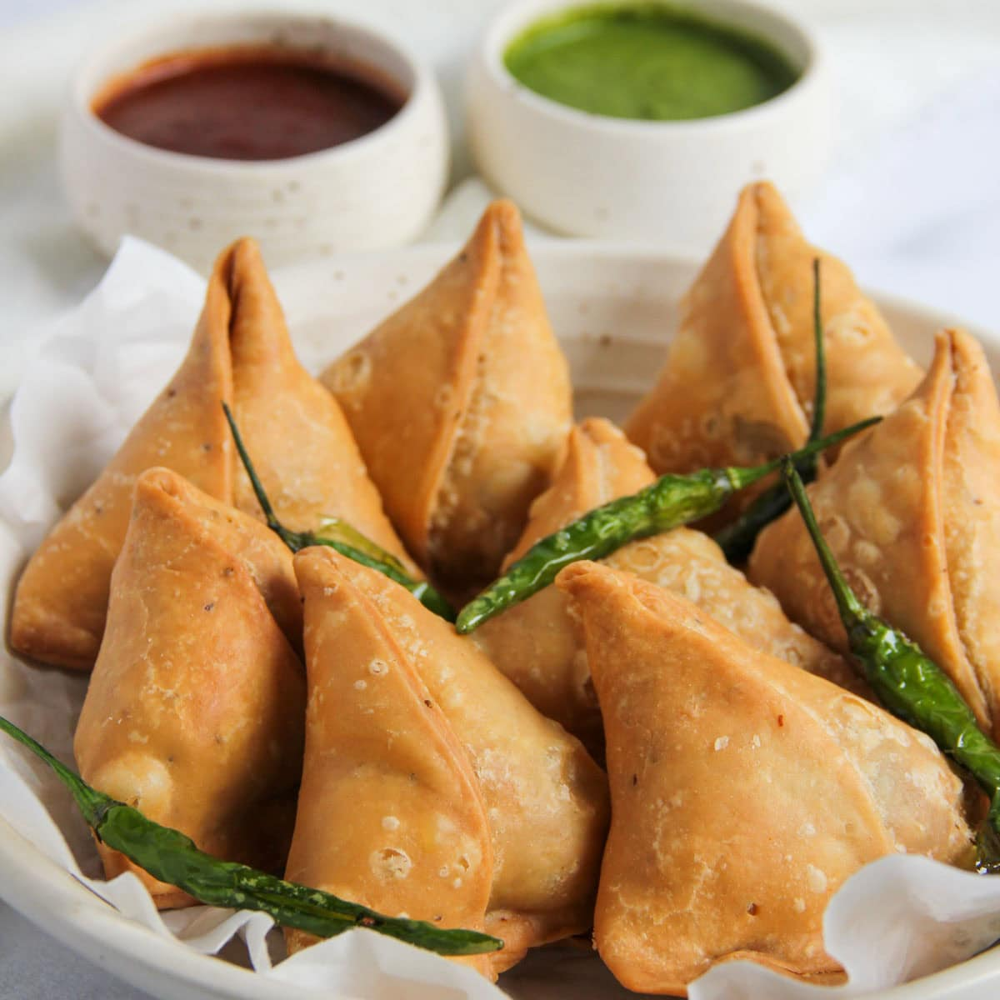

SAMOSA - RECIPE

Ingredients
- 2 cups all-purpose flour (maida)
- ¼ teaspoon carom seeds (ajwain)
- ½ teaspoon salt
- 4 tablespoons oil or ghee
- Water as needed (about ½ cup)
Step by step preparation
- Prepare the Dough:-
In a large bowl, combine flour, salt, and carom seeds.Add oil or ghee and mix with your fingers until the mixture is crumbly. Gradually add water, kneading to a firm non-sticky dough. Cover with a damp cloth and let it rest for 30 minutes
- Make the filling :-
Heat oil in a pan, add cumin and fennel seeds. Add ginger and green chilies, sauté briefly.Add mashed potatoes and green peas.Stir in coriander, cumin, chili powder, garam masala, amchur, and salt.Mix well and cook for 3–4 minutes until aromatic. Let the filling cool
- Shape the Samosa :-
Divide dough into equal portions and roll each into an oval around 6–7 inches.Cut it in half to form two semicircles.Wet the straight edge with water, fold into a cone, and seal the edge.Fill with the prepared potato mixture, then press and seal the top edge tightly.
- Fry the Samosa :-
Heat oil in a deep pan on medium flame.Fry samosas slowly on low to medium heat until golden brown and crisp (about 10–15 minutes).Drain on paper towels